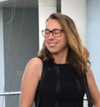

Gabby Riefesel
LiDAR Data Analyst
Gabby Riefesel worked with LiDAR point cloud data to create 3D scenes and fly-over videos of woodlots within the Larose Forest. Gabby also integrated topological data such as trails, roads, and watercourses.
g.riefesel@gmail.com
LinkedIn
Resume

Megan Trotman
Spatial Analyst
'Megan Trotman assisted in the development of the 3D Scenes,website, fly-over videos as well as Experience Builder.
megantrotman01@gmail.com
Linked In
Resume
Christie Peacock
Spatial Analyst
Christie Peacock carried out the spatial analyses for alternative trail locations and potential income calculations.
Christie also helped set up the groundwork for the LiDAR analyses.
LinkedIn
Resume